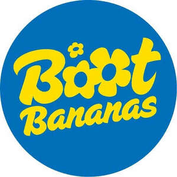

Trade Mark Journal No.2025/042 17 October 2025
UK00004272133 1 October 2025 (1,3,5,8,18,25,28)

- Class 1
- Preparation for the protective treatment of fabrics.
- Class 3
- Skin balms; cosmetic creams; hand creams; bath salts; soap; shampoo; air diffuser; essential oils; shoe cleaning products; shoe protection; shoe product applicator; cleaning preparations for use on fabrics; foot care preparations namely powders and sprays; powders and sprays for use on feet, footwear, socks, hosiery and clothing, for absorbing wetness and used to absorb, neutralize and prevent odours; household, carpet, furniture and litter box cleaners with deodorizers.
- Class 5
- Car air fresheners; air deodorisers; medicated foot sprays and powders; anti-infective foot sprays and powders; anti-fungal foot and shoe sprays and powders; medicated foot treatment preparations, namely, foot sprays and powders used to absorb sweat, and used to absorb, neutralize or prevent odours; treatments for athlete's foot, for alleviating itching and for other foot irritations; deodorizers for household, pet, litter box, carpet and furniture odours.
- Class 8
- Nail files; skin files; nail clippers.
- Class 18
- Bags; toiletry bags; cross-body bags; sling bags; clutch bags; backpacks; sports bags.
- Class 25
- Clothing, footwear, headgear; insoles and inserts for footwear and shoes to absorb wetness; insoles and inserts for footwear and shoes for absorbing, neutralizing and preventing odours; insoles and inserts for footwear and shoes for deodorizing; insoles and inserts for footwear and shoes for cushioning; footwear cushions and pads and clothing and socks designed or treated to absorb moisture and absorb, neutralize and prevent odours; ski boots.
- Class 28
- Sports equipment; skateboards; skis; ski poles; ski bags; ascenders.
Boot Bananas Limited
Representative: Agile IP LLP